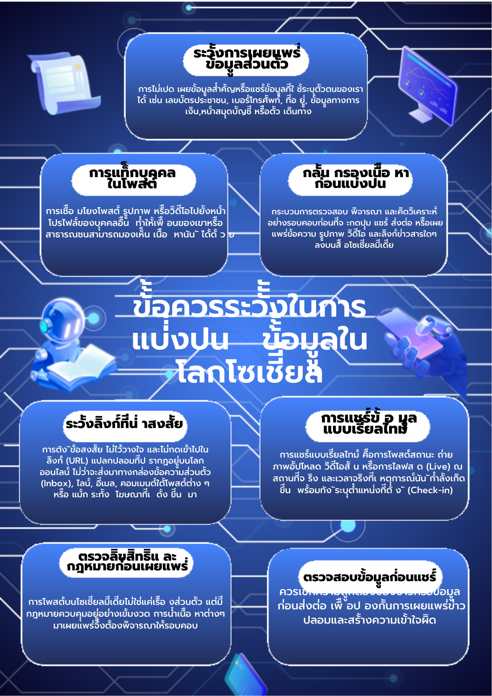

นี่คือผลงานและความภาคภูมิใจของฉัน ✨🫧🐳
ฉันคนที่ชื่นชอบดนตรี และหลงใหลในเสียงดนตรี ฉันภูมิใจในผลงานและทักษะที่ฉันพัฒนามาอย่างต่อเนื่อง เพื่อสร้างสรรค์โชว์ที่สนุกสนาน
เว็บไซต์นี้เป็นหนึ่งในผลงานที่ฉันสร้างขึ้นเพื่อแสดงความสามารถของฉัน
ผลงานการแสดงดนตรีสดในงานกิจกรรมของโรงเรียน
เข้าร่วมการประกวดแข่งขันวงดนตรีสตริงในงานศิลปหัตถกรรมนักเรียน และการแสดงดนตรีในแนว Folk Song
